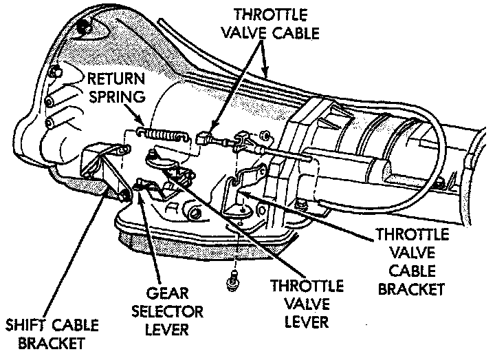
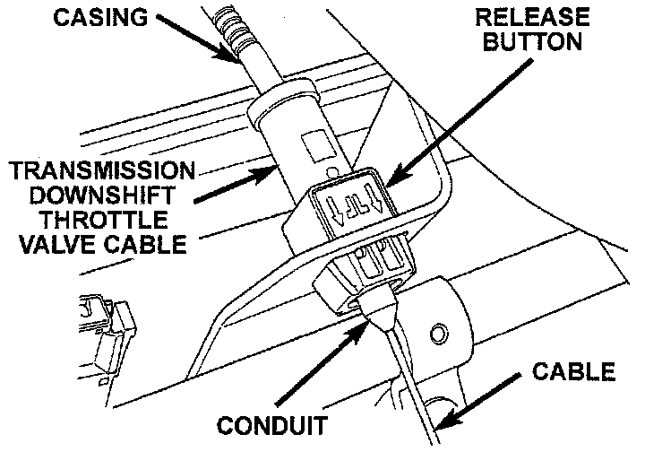

Throttle Valve Cable/Linkage: Adjustments
CHECK1. Turn ignition key to OFF position.
2. Remove air cleaner.

3. Verify that throttle body lever is at curb idle position. Then verify that transmission throttle lever is also at idle (full forward) position.

4. Slide cable off attachment stud on throttle body lever.
5. Compare position of cable end to attachment stud on throttle body lever:
a. Cable end and attachment stud should be aligned (or centered on one another) to within 1 mm (0.039 inch) in either direction.
b. If cable end and attachment stud are misaligned (off center), cable will have to be adjusted as described in following procedure.
6. Reconnect cable end to attachment stud. Then with aid of a helper, observe movement of transmission throttle lever and lever on throttle body.
a. If both levers move simultaneously from idle to half-throttle and back to idle position, adjustment is correct.
b. If transmission throttle lever moves ahead of, or lags behind throttle body lever, cable adjustment will be necessary. Or, if throttle body lever prevents transmission lever from returning to closed position, cable adjustment will be necessary.
PROCEDURE
1. Turn ignition switch to OFF position and shift into Park.
2. Remove air cleaner.
3. Disconnect cable end from attachment stud on throttle body.
4. Verify that transmission throttle lever is in idle (full forward) position. Then be sure lever on throttle body is at curb idle position.
5. Insert a small screwdriver under edge of retaining clip and remove retaining clip.
6. Center cable end on attachment stud to within 1 mm (0.039 inch) and release cable button.
7. Install retaining clip onto cable: housing.
8. Check cable adjustment. Be sure transmission throttle lever and lever on throttle body move simultaneously and as described in cable adjustment checking procedure.